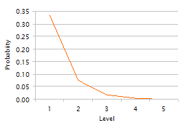

Crossing the spread, i.e. placing a bid market order to take existing limit orders on the ask side, incurs a cost. Compared to the mid price as a benchmark (see pre-trade analysis), being aggressive means the price of execution is the mid price plus half the spread. Remaining patient, placing a limit order on the bid side when buying, results in a price of the mid less half spread, or more. Of course, the principal risk with patience is that that limit order does not execute.
Trading on limit order books is a constant balance between offering liquidity through limit orders and taking liquidity through market orders. When both bids and asks are being taken in equal proportions, the market average execution price (VWAP) tends towards the average mid price. Traders rarely place limit orders far from the best price.

Research [1] by Zovko and Farmer shows that the frequency of limit order placement away from the best price follows a power law with exponent -1.5, illustrated in the chart opposite. The probability of order placement beyond the fifth order book level is neglible. In practice too, traders will rarely examine the depth of the order book beyond the fourth to fifth price levels, partly because this takes time and partly because of the working assumption that orders deeper in the book were placed there without serious intent of execution in the short run.
Where limit orders are placed influences trading. Research [2] by Cao, Hansch and Wang on data from the Australian ASX shows that the weighted average price to different price levels in the limit order book can indicate future price direction. A weighted average price lower than the mid price results from more bid value (price times quantity) than ask value, i.e. more buying interest than selling interest. Cao, Hansch and Wang show that the weighted average price at the first price level (the weighted average of the best bid and best ask) generally leads the weighted average price of the top ten price levels.
The authors also explored limit and market order submission behaviour. They derived the following rules from the trading data.
| Rank | Buying | Selling | ||
|---|---|---|---|---|
| 1 | When the quantity on the best bid is large then a market order is more likely. Joining the best bid will result in a lower priority for the limit order and hence probability of execution. | As with buying but using the best ask as the reference. | ||
| 2 | When the spread is wide then a bid limit order is more likely. The new limit order narrows the spread and hence becomes the new best price, whereas a market order would incur a large penalty of mid plus half spread. | As with buying but using an ask limit order. | ||
| 3 | When the quantity on the best ask is large then a bid limit order is more likely. The trader can afford to be patient as there are more sellers than buyers. | When the quantity at levels 4 to 10 on the bid side is large then a market order is more likely. | ||
| 4 | When the quantity at levels 2 and 3 on the ask side is large then a bid limit order is more likely. Like rule 3, there is more supply than demand so the trader can be patient. | When the difference in price between the best ask and the 10th ask is large then a market order is more likely. | ||
| 5 | When the difference in price between the best ask and 10th ask is large then a bid limit order is more likely. | When the quantity at levels 4 to 10 on the ask side is large then an ask limit order is more likely. |
Buying and selling behaviour are asymmetric, with market orders used more often when selling than when buying. Sellers seem keener to complete their transactions.
| 1. | Ilija Zovko and J Doyne Farmer The Power of Patience, 2002 | |
| 2. | Charles Cao, Oliver Hansch and Xiaoxin Wang The Information Content of an Open Limit Order Book, 2004 |